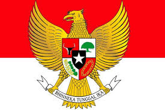
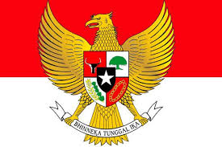

Kerja sama internasional dalam berbagai bentuk: regional, multilateral, dan bilateral mempunyai peran krusial dalam mencapai tujuan global yang berkelanjutan dan inklusif. Melalui kolaborasi ini, negara-negara dapat berbagi sumber daya, pengetahuan, dan teknologi untuk mengatasi tantangan bersama yang kompleks, seperti perubahan iklim, ketahanan pangan, dan akses energi bersih.
Kerja sama regional melibatkan negara-negara dalam wilayah geografis yang sama untuk mencapai tujuan bersama, seperti peningkatan ekonomi, keamanan, dan stabilitas politik. Contoh konkret adalah ASEAN (Association of Southeast Asian Nations), yang terdiri dari 10 negara di Asia Tenggara. Melalui ASEAN Economic Community (AEC), negara-negara anggota bekerja sama untuk menciptakan pasar tunggal dan basis produksi terintegrasi. Inisiatif ini tidak hanya meningkatkan daya saing kawasan tetapi juga mempromosikan perdamaian dan stabilitas di Asia Tenggara. Kerja sama regional memungkinkan negara-negara untuk mengatasi tantangan bersama dengan lebih efektif dan efisien.
Kerja sama bilateral melibatkan dua negara yang bekerja sama secara langsung untuk mencapai tujuan bersama. Contoh signifikan adalah kerja sama antara Indonesia dan Costa Rica dalam pengembangan energi terbarukan, yang mendukung Tujuan Pembangunan Berkelanjutan (SDG) 7: Energi Bersih dan Terjangkau. Dengan keahlian Costa Rica dalam energi hidro dan geotermal, Indonesia dapat meningkatkan kapasitas energi terbarukan di dalam negeri, mengurangi ketergantungan pada bahan bakar fosil, dan berkontribusi pada pengurangan emisi gas rumah kaca. Kerja sama bilateral ini menunjukkan bagaimana dua negara dapat saling mendukung untuk mencapai manfaat bersama yang signifikan.
Kerja sama multilateral melibatkan lebih dari dua negara atau pihak melalui organisasi internasional atau forum global. Contoh nyata adalah Perserikatan Bangsa-Bangsa (PBB), yang terdiri dari hampir seluruh negara di dunia. Melalui PBB, negara-negara bekerja sama dalam berbagai isu global, seperti misi perdamaian, pengembangan ekonomi, dan upaya penanggulangan bencana. Protokol Kyoto dan Protokol Montreal adalah contoh perjanjian internasional yang bertujuan untuk mengurangi emisi gas rumah kaca dan melindungi lapisan ozon. Kerja sama multilateral memungkinkan penanganan isu-isu global secara lebih terorganisir dan terkoordinasi, yang mempromosikan solidaritas dan keberlanjutan global.
Setiap bentuk kerja sama internasional ini secara langsung mendukung pencapaian Tujuan Pembangunan Berkelanjutan (SDGs). Inisiatif seperti pengembangan energi terbarukan berkontribusi pada SDG 7: Energi Bersih dan Terjangkau, sedangkan upaya menjaga ketahanan pangan melalui praktik pertanian berkelanjutan mendukung SDG 2: Mengakhiri Kelaparan. Praktik pertanian yang efisien dan ramah lingkungan, seperti industri kelapa sawit yang berkelanjutan, membantu Indonesia meningkatkan produksi pangan dan menjaga keberlanjutan lingkungan.